Le fil de la lecture
Une fonction, une interface, une personne.
Une prothèse peut transmettre un effort. Une électrode peut mesurer une activité ou stimuler un tissu. Une structure bio-imprimée doit aussi rester vivante. Comprendre ces différences permet de séparer une avancée réelle d’une promesse trop large.
Le parcours va des mécanismes de réparation aux interfaces biologiques, puis aux conditions de leur usage. Les illustrations se lisent avec le texte ; chaque schéma peut être agrandi.
Les références scientifiques et institutionnelles →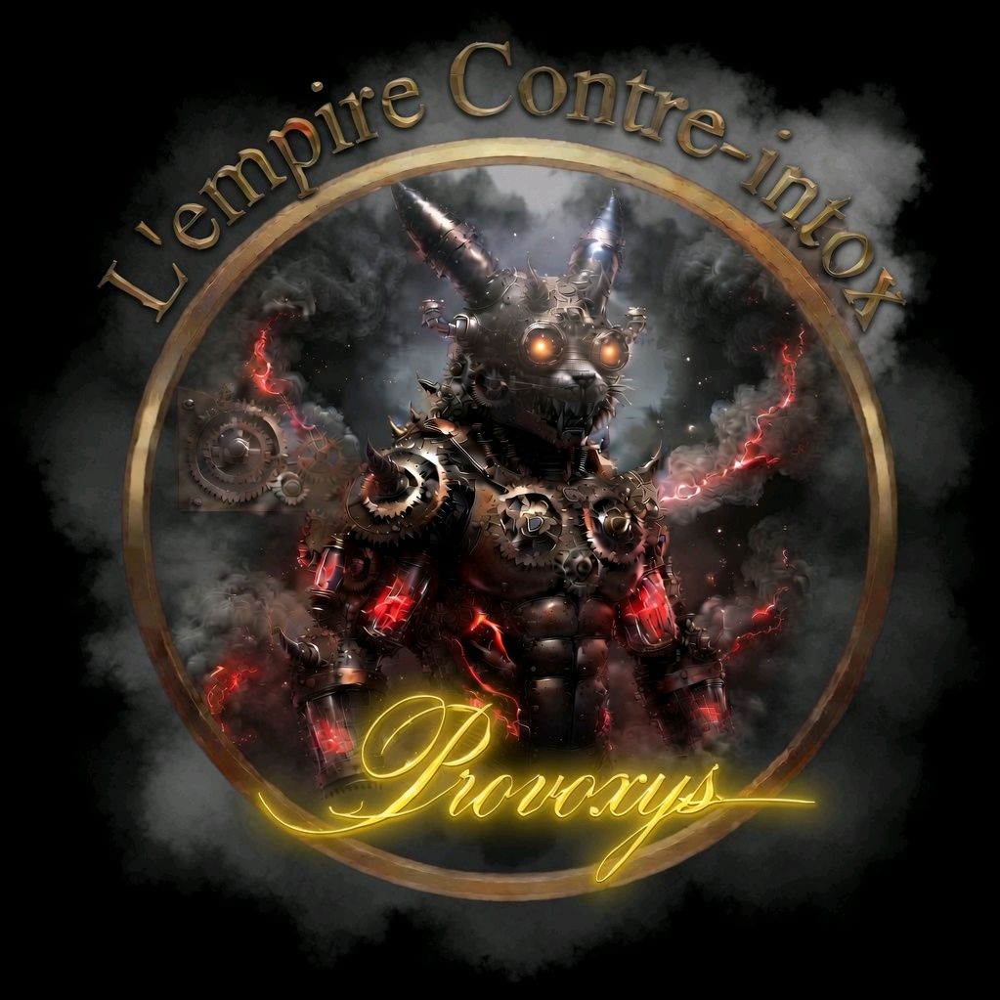
Acte I
Réparer une fonction
Avant de décoder le cerveau, il faut comprendre ce qu’une prothèse remplace : un appui, un mouvement ou une sensation. Chaque solution répond à une fonction précise, avec son mode d’action et ses limites.
Chapitres 01–05
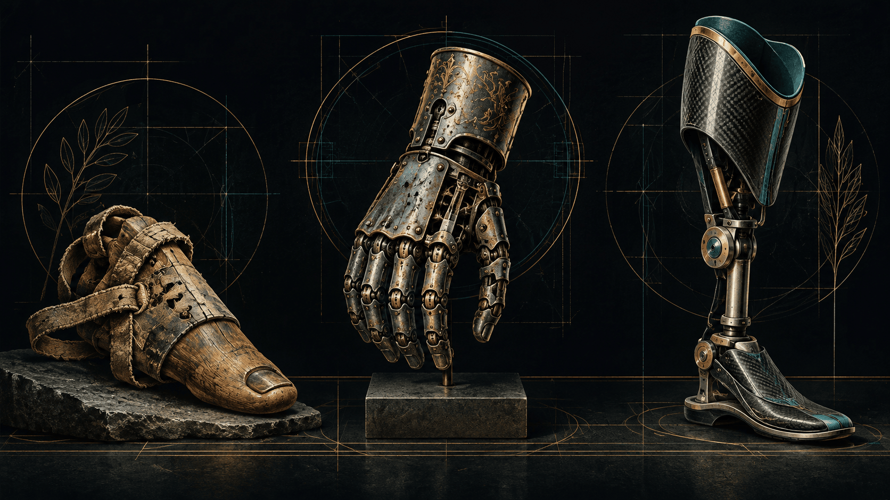
Acte I · Chapitre 01
Remplacer n’a rien de nouveau
L’histoire des technologies médicales commence par une question concrète : comment retrouver une fonction perdue ?
Un appui avant un moteur
Les dispositifs présentés dans ce dossier mesurent une activité, aident au diagnostic, traitent ou suppléent une fonction du corps. Une prothèse est l’un de ces dispositifs : elle supplée une partie manquante ou une fonction altérée. Un implant, lui, se définit d’abord par son implantation dans le corps ; il ne remplace pas nécessairement un organe.
L’orteil de bois et de cuir conservé au Caire, daté d’environ 950 à 710 avant notre ère, montre qu’un objet simple peut répondre à un besoin fonctionnel. Sa forme, ses traces d’usage et des essais modernes réalisés avec des répliques soutiennent l’hypothèse d’une aide à la marche. Cela n’en fait pas un dispositif motorisé, ni une preuve que la prothèse moderne serait déjà tout entière inventée.

Atelier 01 · Explorer et comparer
Suivre le rôle d’une pièce passive
Amenez l’appui vers l’avant-pied. Observez ce qui change et ce qui reste passif.
À explorer- Appui
- Pièce adaptée
- Pas
- Zone d’appui
- —
- Rôle de la pièce
- —
- Source du mouvement
- —
Vérifier ce que j’ai compris
Qu’est-ce qui met la pièce prothétique en mouvement ?
Le déplacement du point illustre un déroulement du pas, sans calcul de pression ni reproduction de la marche antique. Les réglages et les critères de réussite sont choisis pour l’exercice, sans unité physiologique ni valeur de mesure clinique.
Décrire les mécanismes, transmettre les savoir-faire
Au XVIe siècle, Ambroise Paré décrit et diffuse des prothèses articulées. Les ressorts, les verrous et les articulations cherchent à reproduire certains mouvements du membre. Ces réalisations associent la chirurgie aux compétences des artisans : Paré cite notamment le serrurier connu comme le Petit Lorrain.
Cette histoire est collective. Attribuer à un seul chirurgien l’invention de toutes les mains mécaniques effacerait les objets antérieurs et le travail des fabricants. La question utile est de comprendre ce que chaque mécanisme permet effectivement à son utilisateur.

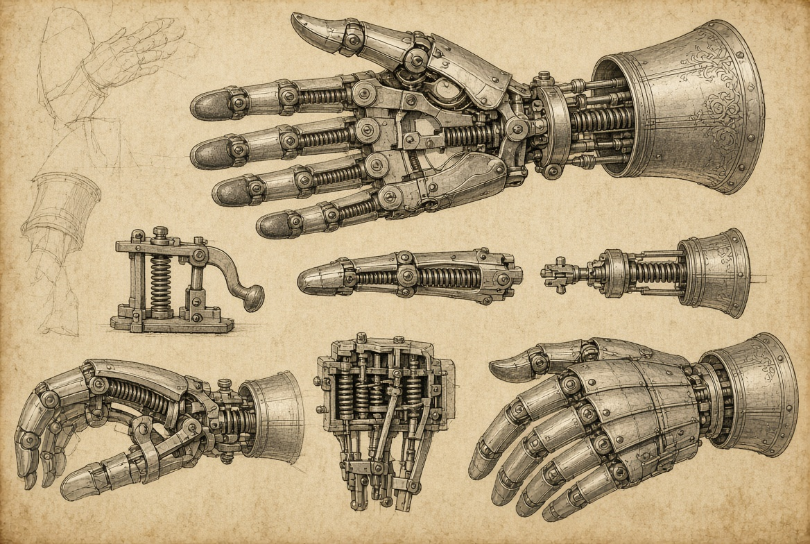
Mesurer et voir : une autre branche de la médecine technique
Toutes les machines médicales ne remplacent pas une partie du corps. La découverte des rayons X par Wilhelm Röntgen en 1895 ouvre une autre voie : obtenir des informations sur l’intérieur du corps. L’imagerie aide au diagnostic ; elle ne doit pas être confondue avec la réparation mécanique d’un membre.
Le fil de ce dossier suit donc trois opérations distinctes : observer une fonction, agir sur elle et, dans certains cas, la remplacer. Nous commençons par le remplacement le plus directement visible : la prothèse mécanique.
Comment transformer un mouvement du corps en mouvement d’une main artificielle ?
Acte I · Chapitre 02
Transmettre un mouvement
Une prothèse mécanique transforme un effort disponible en un geste utile.
Le corps fournit l’effort
Dans une prothèse commandée par le corps, un mouvement résiduel peut tendre un câble, transmis par un harnais à un mécanisme de préhension. Le montage exact dépend du dispositif. L’utilisateur apprend à mobiliser cette chaîne pour ouvrir ou fermer l’effecteur.
Les ressorts et les articulations ne recréent pas une main biologique. Ils rendent possibles certaines actions : saisir un objet, le maintenir ou le relâcher. La qualité de l’emboîture, le confort et l’adaptation du geste comptent autant que l’aspect extérieur.

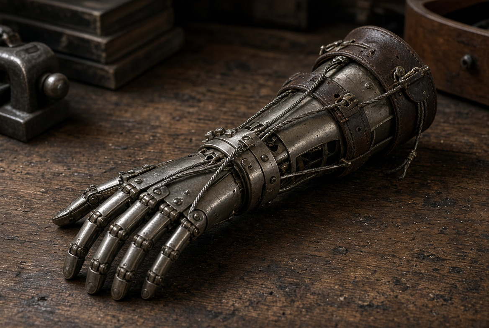
Atelier 02 · Explorer et comparer
Trouver le contact avec un objet
Choisissez un objet, puis augmentez la commande jusqu’au contact. Continuez ensuite à tirer.
À explorer- Mouvement
- Câble
- Préhension
- Objet
- —
- Position du mécanisme
- —
- État du contact
- —
Vérifier ce que j’ai compris
Après le contact, que permet de conclure une commande plus forte dans ce modèle ?
La géométrie et les limites de course sont inventées pour cette démonstration. Aucune force de prise n’est calculée. Les réglages et les critères de réussite sont choisis pour l’exercice, sans unité physiologique ni valeur de mesure clinique.
Distinguer énergie et commande
Deux questions organisent la suite : qu’est-ce qui fournit l’énergie du mouvement ? Qu’est-ce qui indique au dispositif le mouvement à produire ? Avec un câble, le geste corporel participe directement à l’action mécanique. Avec une prothèse myoélectrique, les muscles fournissent un signal de commande, tandis qu’une alimentation électrique fournit l’énergie des moteurs.
Ces solutions répondent à des besoins différents. Une technologie plus complexe ne rend pas automatiquement les solutions mécaniques inutiles. Le choix dépend de la personne, de l’activité et des conditions d’utilisation.
Avant de commander la prothèse, il faut aussi décider comment elle tient au corps.
Références de ce chapitre
Acte I · Chapitre 03
Faire tenir la prothèse au corps
La fixation est une interface à part entière : elle transmet des efforts et doit rester compatible avec les tissus.
De l’emboîture à l’ancrage osseux
Une prothèse de membre peut prendre appui sur une emboîture qui entoure le segment résiduel. Dans certaines indications, un ancrage directement lié à l’os offre une autre solution. Il faut distinguer ce mode de fixation du système qui commande le mouvement : un ancrage osseux ne lit pas, à lui seul, l’intention motrice.
Dans les années 1950, Per-Ingvar Brånemark étudie la relation entre le titane et l’os. Ses travaux conduisent à une méthode d’implantation dentaire, avec un premier patient traité en 1965. L’ostéointégration désigne une relation structurelle et fonctionnelle entre l’os vivant et la surface de l’implant. Les applications dentaires et les ancrages de prothèses de membre ont toutefois des contraintes et des parcours cliniques différents.

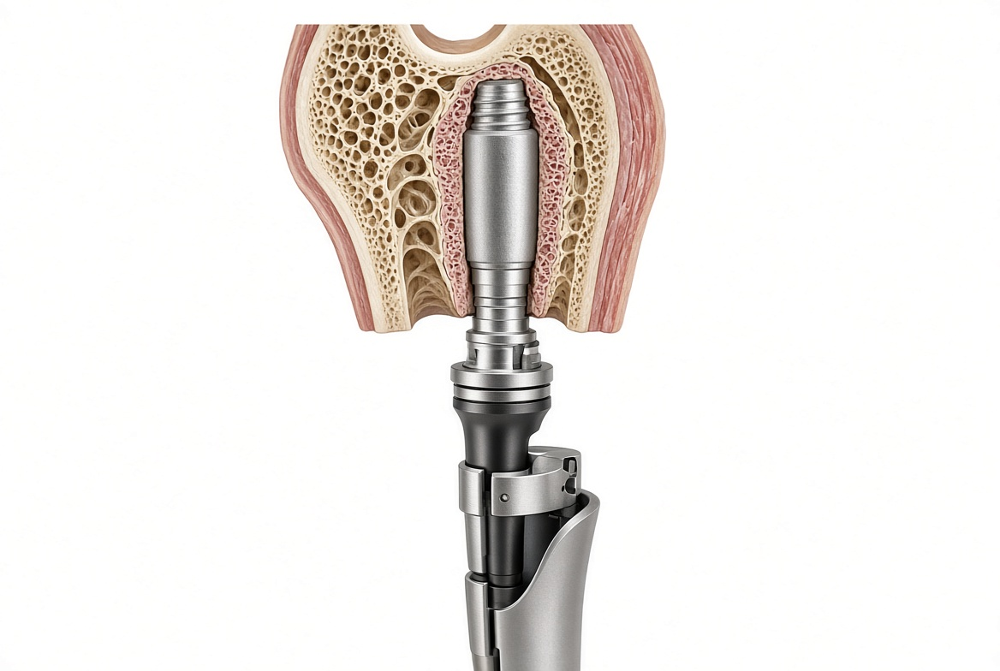
Une interface vivante, pas une simple vis
L’implant transmet des charges dans un tissu qui se remodèle. Lorsqu’un dispositif traverse la peau, le site de passage demande une attention particulière, notamment face au risque infectieux. La réussite d’une fixation ne se résume donc ni au choix d’un métal ni à la solidité d’une pièce.
L’image d’un implant dentaire peut aider à comprendre une relation entre matière, os et tissus mous. Elle ne décrit pas à elle seule l’ancrage d’un membre artificiel. Cette distinction évite de généraliser une complication observée dans un contexte à tous les implants.

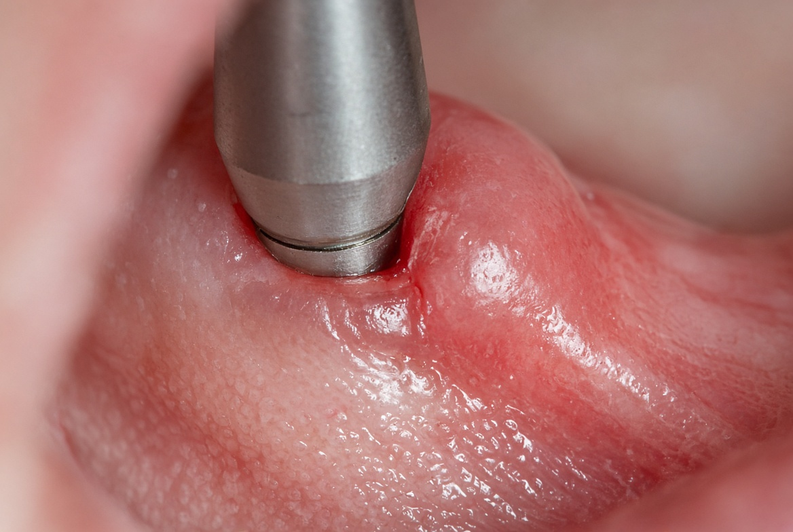
Une fois l’appui compris, voyons comment un muscle peut donner un ordre à un moteur.
Acte I · Chapitre 04
Commander une main avec les muscles
La bionique n’implique pas nécessairement une connexion au cerveau : une activité musculaire peut suffire à commander un mouvement.
Du signal musculaire à l’action
Quand un muscle se contracte, son activité électrique peut être détectée par des électrodes. Une prothèse myoélectrique traite ces signaux pour commander des moteurs. Selon le niveau d’amputation et le dispositif, les signaux proviennent des muscles résiduels ou de muscles réinnervés.
La chaîne comprend donc un capteur, un traitement du signal et un effecteur motorisé. Elle demande un réglage et un apprentissage. Toutes les mains myoélectriques ne possèdent ni les mêmes mouvements indépendants, ni un retour tactile, ni les mêmes algorithmes.

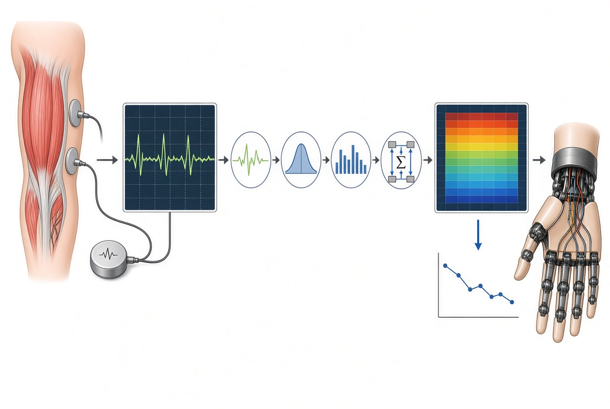
Atelier 03 · Explorer et comparer
Distinguer activité, bruit et seuil
Testez « Bruit seul », puis relevez le seuil. Le même signal produit-il encore un ordre ?
À explorer- Muscle
- Détection
- Moteur
Turquoise : signal fictif · Point doré : écart maximal · Pointillés : seuils
- Activité simulée
- —
- Signal détecté
- —
- Ordre du moteur
- —
Vérifier ce que j’ai compris
Dans cet atelier, franchir le seuil prouve-t-il une intention musculaire ?
Ce décodeur binaire et ses signaux sont fictifs. Une main réelle peut utiliser des traitements et des commandes beaucoup plus complexes. Les réglages et les critères de réussite sont choisis pour l’exercice, sans unité physiologique ni valeur de mesure clinique.
La réinnervation musculaire ciblée
La réinnervation musculaire ciblée, ou TMR, redirige certains nerfs vers des muscles qui deviennent des sites de commande. Les électrodes enregistrent alors l’activité de ces muscles cibles. Il s’agit de signaux musculaires associés à une intention motrice, pas d’une électrode placée dans le cortex.
Le cas de Jesse Sullivan, amputé des deux membres supérieurs après un accident électrique, constitue une étape historique du développement humain de la TMR au début des années 2000. La publication de l’équipe de Todd Kuiken paraît en 2004. Distinguer l’intervention, l’article et les démonstrations ultérieures évite de les confondre en une seule date.
Le même principe de conversion peut concerner une sensation : comment transformer un son en stimulation électrique ?
Acte I · Chapitre 05
Transformer le son en stimulation
L’implant cochléaire ne remplace pas une oreille à l’identique ; il propose un autre chemin vers une perception sonore.
Contourner une fonction altérée
Un microphone capte le son, un processeur le code et un ensemble d’électrodes stimule électriquement les fibres du nerf auditif dans la cochlée. L’implant contourne ainsi des cellules ciliées endommagées. Il doit être distingué d’une aide auditive qui amplifie les sons et d’un implant du tronc cérébral qui vise une autre structure.
La perception obtenue varie selon les situations et demande une adaptation. Le réglage et la rééducation font partie du parcours. Présenter l’appareil comme le rétablissement immédiat d’une audition naturelle donnerait une image trompeuse de ses possibilités.

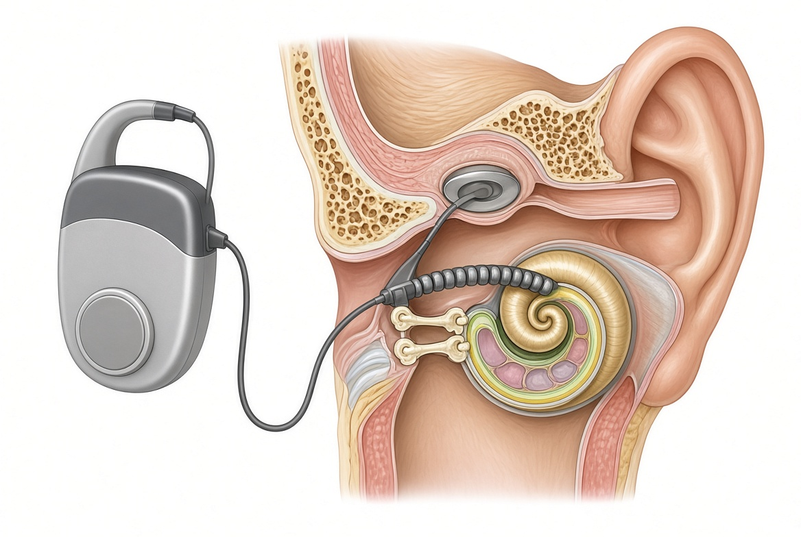
Atelier 04 · Explorer et comparer
Explorer les régions de stimulation
Déplacez la bande sonore, puis comparez un découpage en 4 et en 12 zones.
À explorer- Son
- Codage
- Stimulation
- Bande choisie
- —
- Zone sélectionnée
- —
- Découpage du modèle
- —
Vérifier ce que j’ai compris
Ajouter des zones à ce dessin permet-il de prédire la perception d’une personne ?
Les zones, leur nombre et les signaux sont schématiques. Ce découpage ne représente ni un implant précis ni la qualité d’une audition. Les réglages et les critères de réussite sont choisis pour l’exercice, sans unité physiologique ni valeur de mesure clinique.
Une histoire de contributions successives
William House est une figure importante de cette histoire, avec des implantations intracochléaires dès 1961. Avant lui, André Djourno et Charles Eyriès avaient provoqué des sensations auditives par stimulation implantée en 1957. L’implant cochléaire résulte ainsi de contributions successives, depuis les premières sensations auditives provoquées jusqu’aux dispositifs intracochléaires.
Ce premier acte aboutit à une idée commune : une technique aide à restaurer une fonction au moyen d’un mécanisme défini. L’appui, la fixation, la commande et la perception font chacun intervenir une interface avec le corps.
Pour comprendre les neurotechnologies, il faut d’abord comprendre comment les tissus réagissent à l’implantation.
Acte II
Relier le vivant et la machine
Les dispositifs précédents rencontrent déjà des tissus vivants. Nous examinons maintenant cette interface : comment le tissu réagit, comment un signal cérébral devient une commande, comment la stimulation agit et ce que change la fabrication d’une structure contenant des cellules.
Chapitres 06–09
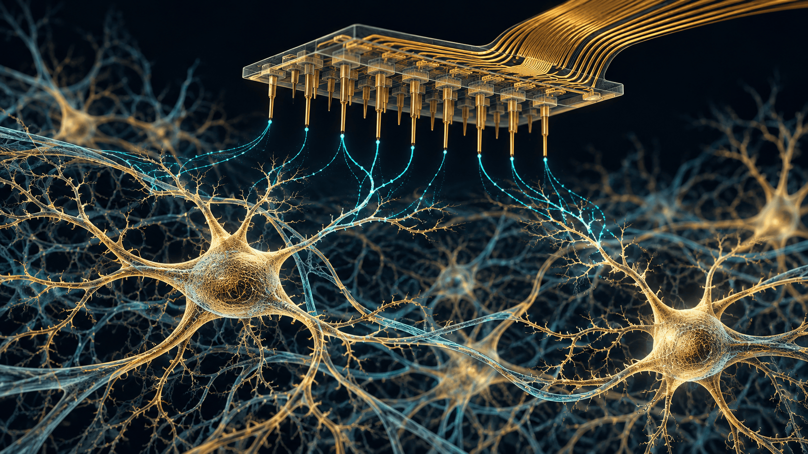
Acte II · Chapitre 06
Quand le tissu réagit à l’implant
Une électrode fonctionne dans un environnement biologique qui change ; elle ne reste pas isolée de la vie du tissu.
La réaction gliale
L’insertion d’une électrode peut provoquer une réponse inflammatoire et modifier l’état des cellules autour du site implanté. Les astrocytes et la microglie participent à cette réponse. La gliose ne se réduit donc pas à la prolifération d’un seul type de cellule ni à la formation mécanique d’une coque uniforme.
Cette réaction peut modifier les conditions d’enregistrement. Elle interagit avec d’autres facteurs : les micromouvements de l’implant, les lésions initiales, les pertes neuronales et l’évolution des matériaux. Une baisse de qualité du signal ne peut pas être attribuée systématiquement à une seule cause.

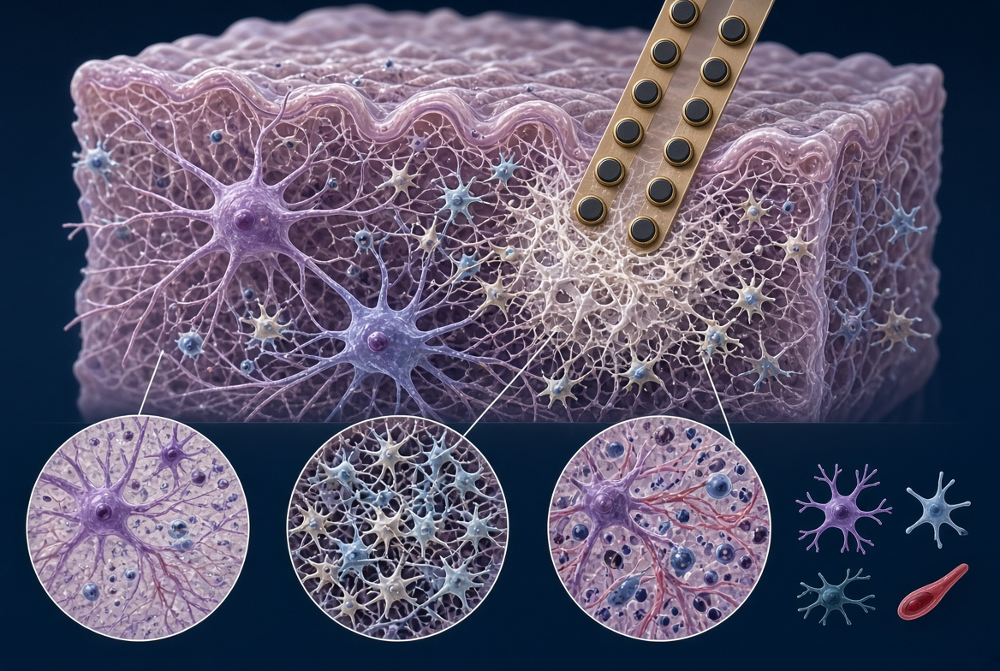
Atelier 05 · Explorer et comparer
Comparer atténuation et bruit
Comparez les scénarios « Atténuation » et « Bruit ». Regardez la référence et le signal obtenu.
À explorer- Tissu
- Interface
- Signal
- Réponse représentée
- —
- Amplitude du signal utile
- —
- Bruit ajouté
- —
Vérifier ce que j’ai compris
Un signal dégradé suffit-il à diagnostiquer une gliose ?
L’effet de la réponse tissulaire est une règle de démonstration. Il ne prédit aucune évolution clinique, aucune durée et aucune cause de défaillance réelle. Les réglages et les critères de réussite sont choisis pour l’exercice, sans unité physiologique ni valeur de mesure clinique.
La biocompatibilité est une évaluation
La biocompatibilité se rapporte à un matériau, un dispositif et un usage déterminés. Elle ne signifie pas que tout tissu ignorera toujours le dispositif. La série ISO 10993 contribue à évaluer des risques biologiques ; elle ne garantit ni une absence universelle de toxicité ni l’absence de gliose.
Une interface durable exige donc d’évaluer ensemble le matériau, la géométrie, les conditions d’implantation et la stabilité du signal.
Que fait-on du signal une fois qu’il a été enregistré ?
Acte II · Chapitre 07
Du signal cérébral à la commande
Une interface cerveau-machine transforme des signaux cérébraux en commandes limitées à une tâche et à un contexte d’apprentissage.
Enregistrer, décoder, agir
Une interface cerveau-machine, ou ICM, acquiert une activité cérébrale, extrait des informations utiles et les traduit en une commande. Certaines interfaces sont invasives ; d’autres enregistrent l’électroencéphalogramme à la surface du cuir chevelu. Toutes ne captent donc pas directement l’activité de neurones isolés dans le cortex.
Le décodeur est ajusté à une tâche, à des données et à des conditions d’utilisation. Une commande de curseur ou de bras robotique obtenue dans une expérience ne démontre pas une lecture libre et universelle des pensées. Un retour sensoriel peut être ajouté dans certains systèmes, mais il n’est pas une propriété automatique de toute ICM.

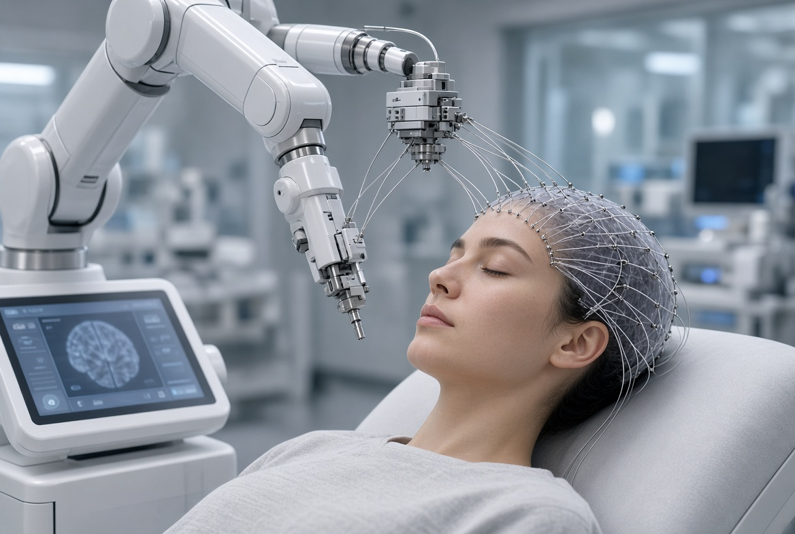
Atelier 06 · Explorer et comparer
Atteindre une cible avec un décodeur
Atteignez une cible décentrée, puis inversez le décodeur sans changer l’entrée. Comparez le résultat.
À explorer- Entrée fictive
- Décodeur
- Commande
- Entrée simulée
- —
- Règle du décodeur
- —
- Commande obtenue
- —
Vérifier ce que j’ai compris
Pourquoi le résultat change-t-il lorsque le décodeur est inversé ?
La relation entre l’entrée et le curseur est inventée. Aucune pensée ni activité cérébrale réelle n’est enregistrée ou décodée. Les réglages et les critères de réussite sont choisis pour l’exercice, sans unité physiologique ni valeur de mesure clinique.
Nicolelis : de l’expérience à la démonstration publique
En 2000, les travaux de Wessberg, Nicolelis et leurs collègues montrent que des ensembles de signaux neuronaux de primates permettent de prédire une trajectoire de main et de commander des dispositifs robotiques en temps réel. Cette étape s’inscrit dans une histoire plus large de recherche sur les interfaces.
En 2014, Juliano Pinto participe à un coup d’envoi symbolique de la Coupe du monde au Brésil, aidé par un exosquelette développé par le consortium Walk Again. Cette démonstration, préparée et assistée, n’équivaut ni à une guérison de la paraplégie ni à une autonomie quotidienne démontrée.
Le cerveau peut fournir une information à une machine ; une machine peut aussi envoyer une stimulation au système nerveux.
Acte II · Chapitre 08
Stimuler pour traiter
Enregistrer et stimuler sont deux opérations différentes. Leur confusion fait perdre le sens médical du dispositif.
Un signal va vers le tissu
Une électrode d’enregistrement mesure une activité. Une électrode de stimulation applique un signal électrique à un tissu. Un dispositif peut combiner ces deux fonctions, mais elles doivent être décrites séparément : le trajet d’une information n’est pas forcément celui de l’action thérapeutique.
Un stimulateur cardiaque et un dispositif de stimulation cérébrale profonde ont des cibles et des indications différentes. Leur point commun tient à l’utilisation de signaux électriques pour agir sur une fonction ; cela n’en fait pas des machines capables de prendre le contrôle général du corps.
Un pacemaker peut détecter et stimuler différentes régions du cœur selon sa configuration. Les dispositifs classiques comportent des sondes ; d’autres sont placés directement dans une cavité cardiaque. De même, une stimulation cérébrale profonde conventionnelle suit des réglages définis, tandis que certaines formes adaptatives ajustent la stimulation en fonction de signaux enregistrés. La boucle de retour dépend donc du système décrit.
Benabid, Pollak et la stimulation cérébrale profonde
Une publication de 1987 de l’équipe d’Alim-Louis Benabid et de Pierre Pollak constitue une étape fondatrice de la stimulation à haute fréquence pour le tremblement. Les développements concernant le noyau sous-thalamique suivent dans les années 1990, dans une histoire collective qui comprend notamment les travaux de Mahlon DeLong.
La stimulation cérébrale profonde peut atténuer certains symptômes moteurs chez des patients sélectionnés. Elle ne guérit pas la maladie de Parkinson et n’en arrête pas nécessairement l’évolution. Ses indications, son réglage et ses risques demandent une évaluation médicale spécifique.
Le précédent des implants électroniques
En 1958 à Stockholm, Åke Senning implante un stimulateur cardiaque conçu par Rune Elmqvist. Ce repère historique permet de comprendre l’entrée de l’électronique dans le corps ; il ne doit pas faire oublier l’évolution des dispositifs, de leur fiabilité et de leur suivi.
Jusqu’ici, les dispositifs ont été fabriqués puis mis en relation avec le vivant. L’ingénierie tissulaire change la question : la structure fabriquée peut contenir elle-même des cellules vivantes.

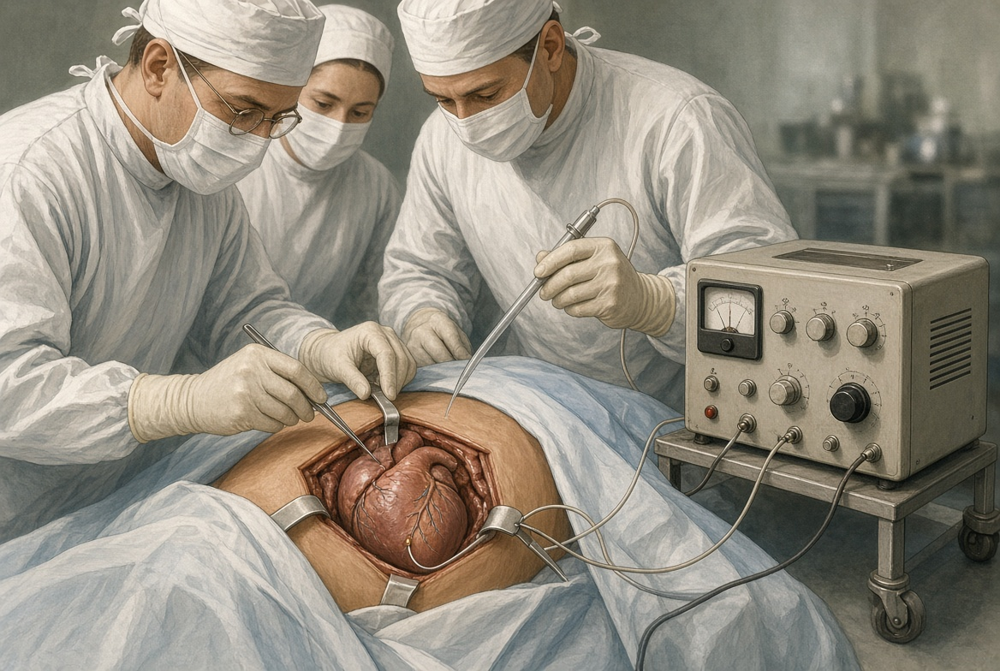
De l’électrode au tissu cultivé : la bio-impression déplace la frontière entre matériau et vivant.
Références de ce chapitre
- Publication originale, PubMed
- Fondation Lasker, prix 2014
- Hôpital universitaire Karolinska — historique
- Hjärt-Lungfonden — fondation soutenant ces recherches
- NHLBI — fonctionnement des pacemakers
- NICE — pacemakers sans sonde, février 2026
- NINDS — deep brain stimulation
- NIH — étude sur la stimulation adaptative, 2024
Acte II · Chapitre 09
Construire avec des cellules vivantes
Assembler un tissu est un problème différent de fabriquer une pièce : il faut aussi maintenir les cellules en vie et obtenir une fonction.
Ce que signifie bio-imprimer
La bio-impression 3D organise des matériaux contenant des cellules, souvent associés à des hydrogels, pour produire des structures en trois dimensions. Elle se distingue de l’impression d’une pièce inerte en titane ou en résine. Elle se distingue aussi d’autres formes d’ingénierie tissulaire qui ne passent pas par une imprimante.
Les recherches concernent notamment la peau, le cartilage, l’os et certains tissus cardiaques ou oculaires. Ces domaines ne partagent pas tous le même niveau de maturité. Une expérience en laboratoire, un résultat chez l’animal, un essai humain et un traitement disponible constituent des étapes distinctes.

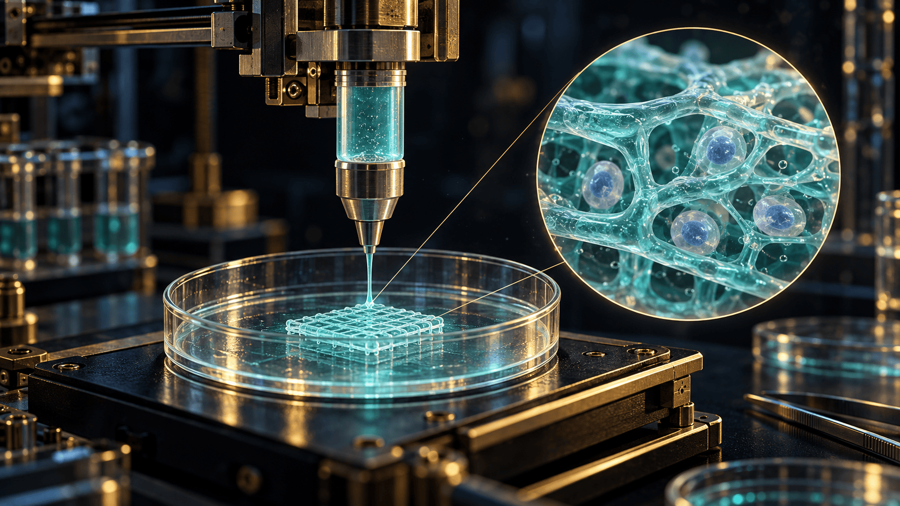
Atala : une avancée réelle, une technique à nommer
L’étude publiée en 2006 par Anthony Atala et ses collègues porte sur sept patients recevant des tissus vésicaux cultivés à partir de leurs propres cellules sur des matrices biodégradables. Les greffons servent à une reconstruction ou à un agrandissement de vessies existantes.
Ces tissus ne sont ni des vessies complètes bio-imprimées ni la preuve que l’on sait produire n’importe quel organe à la demande. Nommer précisément la technique permet d’expliquer l’avancée sans lui attribuer une promesse qu’elle n’établit pas.
Les verrous qui demeurent
Les cellules ont besoin d’oxygène, de nutriments et d’un environnement approprié. Imprimer des canaux ne suffit pas à obtenir un réseau capillaire fonctionnel et durable, connecté à l’organisme. La vascularisation, l’innervation, la maturation et la fonction à l’échelle d’un organe restent des difficultés importantes.
Des bio-encres plus adaptées et des matériaux évoluant sous l’effet de stimuli ouvrent des pistes. On parle parfois de bio-impression 4D pour ces changements dans le temps. Cela décrit une stratégie de recherche, pas la disponibilité d’un organe greffable.
Les organoïdes et les organes sur puce apportent d’autres modèles : un organoïde implique notamment l’auto-organisation de cellules ; un organe sur puce organise un environnement expérimental contrôlé. Ils peuvent être combinés et ne sont pas nécessairement bio-imprimés. Ils peuvent contribuer à réduire certains essais animaux, sans garantir leur remplacement intégral.
Avant de passer du laboratoire au soin, comment établir les preuves et déterminer les règles applicables à ce produit ?
Références de ce chapitre
- The Lancet, étude originale
- Wake Forest, annonce de l’étude
- Albanna et al., étude originale peau
- Wake Forest, communiqué des chercheurs
- Suo et al., recherche originale 2025
- Nature Chemical Engineering, perspective 2026
- NIH, distinction des technologies
- Park et al., article des chercheurs
- EMA — Advanced therapy medicinal products: Overview
- EMA — Recommandations scientifiques de classification des MTI
Acte III
Protéger la personne
Une prouesse technique ne règle ni la sécurité, ni le consentement, ni l’accès aux soins. Nous examinons maintenant les preuves, les droits et les responsabilités qui doivent accompagner le dispositif, de la recherche à son utilisation quotidienne.
Chapitres 10–12Acte III · Chapitre 10
Du prototype au produit évalué
Faire fonctionner un prototype ne suffit pas à établir son bénéfice clinique ni à remplir les conditions de son utilisation en soins.
Qualifier le produit avant d’annoncer ses obligations
Dans l’Union européenne, le règlement 2017/745 encadre les dispositifs médicaux, leur évaluation clinique et leur conformité. Le marquage CE est une règle centrale de mise sur le marché ; les dispositifs sur mesure et ceux destinés aux investigations cliniques suivent des dispositions particulières.
Certains produits de stimulation cérébrale sans finalité médicale relèvent aussi d’un encadrement spécifique, notamment le règlement d’exécution 2022/2346. Cela ne classe pas automatiquement un casque EEG qui se contente d’enregistrer une activité cérébrale dans la même catégorie qu’un appareil de stimulation.
Un logiciel utilisé en santé n’est pas automatiquement un dispositif médical. Sa destination et ses fonctions déterminent sa qualification. Les guides du groupe MDCG aident à raisonner sur cette classification ; ils ne remplacent pas le texte juridiquement applicable.
De même, la bio-impression ne déclenche pas automatiquement un double régime complet « dispositif médical et médicament ». Un produit peut relever des médicaments de thérapie innovante selon ses cellules, leurs manipulations et son usage. Certains médicaments de thérapie innovante intègrent un dispositif médical ; la qualification de l’ensemble doit être établie au cas par cas.
Organiser la recherche et le consentement
En France, la procédure d’une investigation dépend du projet, du dispositif et de son usage. L’ANSM et les comités de protection des personnes interviennent selon les dispositions applicables. Il faut distinguer cette recherche de celle des médicaments, notamment régie par le règlement 536/2014, et ne pas annoncer une procédure unique pour toute innovation. Le cadre français des recherches impliquant la personne humaine, issu notamment de la loi Jardé, complète ces dispositions.
Les participants doivent recevoir une information adaptée et bénéficier des garanties prévues, notamment lorsqu’ils sont vulnérables. Ils peuvent quitter une investigation sans justification ni préjudice dans les conditions prévues par les textes. L’évaluation clinique est obligatoire, mais un nouvel essai humain n’est pas systématique : des données existantes peuvent être utilisées dans les cas et sous les conditions prévus par le règlement.

Normes, matériaux et intelligence artificielle
Les exigences légales de sécurité sont obligatoires. L’usage des normes harmonisées constitue généralement une voie volontaire pour contribuer à démontrer la conformité. La série ISO 10993 aide à évaluer les risques biologiques ; son application ne garantit pas l’absence de complication. L’édition ISO 10993-1:2025 s’inscrit dans cette évaluation des risques. La publication d’une nouvelle édition ne prouve pas qu’elle est déjà harmonisée dans l’Union européenne.
Dans le cas des produits médicaux, le classement à haut risque de l’AI Act dépend notamment de deux critères : l’IA est elle-même un produit ou un composant de sécurité relevant de l’annexe I, et le produit est soumis à une évaluation de conformité par un tiers. La présence d’un algorithme ne suffit donc pas à classer toutes les prothèses de la même manière.
Au 23 octobre 2026, l’application des règles reste progressive. Le calendrier actualisé prévoit les obligations relatives aux systèmes à haut risque intégrés aux produits de l’annexe I au 2 août 2028 et celles de l’annexe III au 2 décembre 2027. Il faut donc distinguer l’existence du règlement, ses dispositions déjà applicables et les échéances à venir.
Évaluer la machine ne suffit pas : qui peut décider de son usage et du traitement des données ?
Références de ce chapitre
- EUR-Lex — Règlement 2017/745, art. 20, 21, 61–82
- EUR-Lex — Règlement 2022/2346, annexe VII
- Légifrance — Recherches impliquant la personne humaine, dispositions dispositifs
- ANSM — Schéma des demandes d’investigation clinique
- EUR-Lex — AI Act consolidé au 27 juillet 2026
- Commission européenne — AI Act, calendrier actualisé
- Conseil de l’UE — chronologie AI Act 2026
- MDCG 2019-11 révision 1, juin 2025
- Commission européenne — Normes harmonisées des dispositifs médicaux
- ISO — ISO 10993-1:2025
Acte III · Chapitre 11
Consentir et garder la maîtrise de ses données
L’accès au corps et l’accès aux informations qu’il produit posent des questions différentes, mais étroitement liées.
Le corps n’est pas un bien appropriable
En droit français, les articles 16 et suivants du Code civil protègent la personne, l’intégrité du corps et sa non-patrimonialité. Le consentement préalable est un principe fondamental. Lorsqu’une personne n’est pas en état de consentir, la loi encadre les interventions thérapeutiques nécessaires.
Ce principe ne signifie ni que les actes de soins sont gratuits par nature ni qu’une prothèse ne peut pas être commercialisée. Il distingue la personne et son corps des biens et services qui peuvent participer à son traitement.
Des données sensibles, pas une lecture transparente de l’esprit
Le RGPD protège particulièrement certaines catégories de données, dont les données de santé. Le consentement explicite est l’une des dérogations prévues à l’interdiction de principe de leur traitement ; d’autres concernent notamment les soins, la recherche ou l’intérêt public, sous les conditions du texte. En France, la loi Informatique et Libertés complète ce cadre.
Toutes les neurodonnées ne reçoivent pas automatiquement la même qualification. Les données biométriques relèvent de la catégorie particulière lorsqu’elles servent à identifier une personne de manière unique. Il faut examiner ce que les données révèlent et l’usage qui en est fait, sans assimiler un enregistrement neuronal à une pensée entièrement lisible.
Neurodroits : une proposition, des textes et des dates
En 2017, un groupe réuni à Columbia autour du neurobiologiste Rafael Yuste propose des neurodroits pour protéger notamment la vie mentale, l’identité et la liberté de décision face aux neurotechnologies. Yuste dirige le NeuroTechnology Center de Columbia et a contribué à l’origine de la BRAIN Initiative.
Le Chili a modifié sa Constitution par la loi 21.383 en 2021. Le Conseil des droits de l’homme de l’ONU a adopté la résolution 51/3 sur les neurotechnologies en 2022. L’UNESCO a adopté sa recommandation sur l’éthique des neurotechnologies le 11 novembre 2025. Une recommandation internationale, une proposition éthique et une règle nationale n’ont pas la même portée juridique.
Le Conseil de l’Europe examine également l’adéquation du cadre existant de protection des droits humains aux neurotechnologies. Ces travaux aident à préciser les enjeux sans créer, à eux seuls, un régime juridique identique dans tous les pays.
La cybersécurité fait partie du soin
Un dispositif connecté doit être examiné aussi sous l’angle de ses vulnérabilités numériques et de sa maintenance. Le terme brainjacking désigne notamment le risque d’un détournement malveillant d’un dispositif neuronal. Une faille ou une démonstration expérimentale ne prouve pas une attaque clinique ayant blessé un patient.
La confidentialité mentale et la liberté cognitive donnent un cadre de discussion à ces enjeux. Leur protection passe notamment par des finalités précises, des accès limités aux données, des règles claires sur le retrait du consentement et des mesures de sécurité adaptées.
L’autonomie dépend aussi des prix, de la maintenance et de la responsabilité lorsque le dispositif tombe en panne.
Références de ce chapitre
- Légifrance — Code civil, article 16-3
- CNIL — RGPD, articles 6 et 9
- Conseil de l’Europe — Neurotechnologies, travaux 2021–2026
- Bibliothèque du Congrès du Chili — Loi 21.383
- Ministère chilien de la Science — Protection constitutionnelle pionnière
- Columbia Magazine — The Need to Protect the Data in Our Brains
- ONU — A/HRC/RES/51/3
- UNESCO — Recommandation : historique officiel
- UNESCO — Instruments juridiques, date officielle d’adoption
- Columbia NeuroTechnology Center — Rafael Yuste
- FDA — Cybersecurity
- Légifrance — Code civil, article 16-1
- CNIL — Le RGPD, c’est quoi ?
- Columbia, rôle dans la proposition en 2013
- NIH, présentation de BRAIN
- Pycroft et al., publication
- Manuscrit des auteurs, Oxford
Acte III · Chapitre 12
Qui garde la maîtrise dans la durée ?
L’innovation doit être appréciée dans la durée : accès au dispositif, suivi, maintenance et possibilité de choisir.
Rendre l’accès effectif
En France, la mise sur le marché et le remboursement répondent à des décisions distinctes. La CNEDiMTS, commission spécialisée de la HAS, évalue l’intérêt clinique des dispositifs qui lui sont soumis en vue d’une prise en charge. Le CEPS intervient sur les tarifs et, selon les cas, les prix limites de vente. L’inscription sur la liste des produits et prestations remboursables relève d’une décision ministérielle.
L’absence d’inscription à la LPPR ne suffit pas à conclure qu’aucun financement n’est possible : les circuits hospitaliers et les situations prises en charge doivent aussi être examinés. L’enjeu reste concret : une technique ne devient pas accessible à tous par sa seule existence.
Dépendance technique et propriété intellectuelle
Une prothèse peut associer du matériel, un logiciel, des mises à jour et un service de suivi. Les questions de maintenance et d’interopérabilité sont donc aussi des questions d’autonomie. Les conditions d’accès aux mises à jour, à la maintenance et aux services associés varient selon le produit et le contrat.
Le corps humain et la simple découverte d’un de ses éléments ne sont pas, en tant que tels, des inventions brevetables. Une invention technique peut l’être sous les conditions du droit des brevets. Un brevet sur un dispositif n’est pas un titre de propriété sur la personne qui l’utilise.
Un dommage ne désigne pas automatiquement un responsable
Une panne, une complication et une faute ne sont pas des notions équivalentes. La responsabilité dépend du défaut ou de la faute, du dommage, du lien de causalité et du régime applicable. En matière pénale, une intervention qui échoue ne démontre pas à elle seule une infraction.
L’ONIAM peut intervenir pour certains accidents médicaux sans faute lorsque les conditions légales sont réunies. L’absence de faute ne suffit pas à ouvrir automatiquement un droit à indemnisation : l’imputabilité, l’anormalité et la gravité sont notamment prises en compte, avec des dispositions particulières pour la recherche.
La directive européenne 2024/2853 étend explicitement le régime des produits défectueux aux logiciels et adapte certaines règles de preuve aux produits complexes. Les États doivent la transposer au plus tard le 9 décembre 2026 ; le nouveau régime vise les produits mis sur le marché ou en service après cette date. Un dommage, un défaut et un lien de causalité restent à établir, avec les présomptions prévues par les textes.
Réparer et augmenter : une discussion politique
Les recherches civiles et militaires peuvent se croiser. Le règlement européen sur les biens à double usage ne classe toutefois pas automatiquement tout exosquelette ou toute interface neuronale comme un bien contrôlé : les listes, les caractéristiques et la destination comptent. En France, l’avis de 2020 du Comité d’éthique de la défense sur le soldat augmenté examine notamment les risques, le consentement et la réversibilité.
Publié en 1985, le Manifeste pour les cyborgs de Donna Haraway mobilise la figure du cyborg dans une réflexion féministe sur les frontières entre humain et machine, nature et technique, et sur les rapports de pouvoir qui les traversent. Cette perspective invite à demander qui conçoit les technologies, qui en bénéficie et qui en dépend.
Réparer une fonction et augmenter une capacité ne se séparent pas toujours par une frontière simple. Le point de départ doit rester la personne : ce qu’elle souhaite faire, ce qu’elle comprend du dispositif, les risques qu’elle accepte et les choix qu’elle conserve dans la durée.
Références de ce chapitre
- EUR-Lex — Directive 2024/2853, responsabilité des produits
- Union européenne — Application des nouvelles règles en décembre 2026
- EUR-Lex — Règlement 2017/745, art. 20, 21, 61–82
- FDA — Cybersecurity
- OEB — Règle 29, corps humain et ses éléments
- OEB — Article 53, exceptions à la brevetabilité
- HAS — FAQ CNEDiMTS, parcours de remboursement
- Légifrance — Code pénal, article 221-6
- ONIAM — Accidents médicaux, conditions légales
- Direction générale des Entreprises — Mon bien est-il à double usage ?
- Ministère des Armées — Avis sur le soldat augmenté
- UC Santa Cruz, profil et bibliographie
Au terme des trois actes
Quelle fonction ? Quelles preuves ? Quelle autonomie ?
La fonction
Mesurer, remplacer, commander et stimuler sont des opérations différentes. Nommer le mécanisme évite de prêter au dispositif une capacité qu’il n’a pas.
Les preuves
Une expérience de laboratoire, une démonstration assistée et un bénéfice clinique durable répondent à des questions différentes.
La personne
Consentement, accès aux soins, sécurité, suivi et liberté de décision font partie de l’évaluation, tout au long de l’usage.
Réparer une fonction ou augmenter une capacité engage une vie réelle. Le progrès s’évalue avec la personne qui utilise la technologie, dans les conditions où elle devra vivre avec elle.
Repères de lecture
Les mots du dossier
Revenir à une définition, puis poursuivre le fil de la lecture.
- Prothèse
- Dispositif qui supplée une partie du corps ou une fonction. Elle peut être passive, mécanique ou motorisée.
- Implant
- Dispositif placé dans le corps. Il peut servir à fixer, mesurer, stimuler ou remplacer une fonction.
- Ostéointégration
- Relation structurelle et fonctionnelle entre l’os vivant et la surface d’un implant ; elle concerne une fixation, pas une commande nerveuse.
- Électromyographie — EMG
- Enregistrement de l’activité électrique musculaire, utilisé notamment pour commander certaines prothèses.
- Réinnervation musculaire ciblée — TMR
- Redirection de nerfs vers des muscles cibles qui peuvent fournir des signaux de commande.
- Interface cerveau-machine — ICM ou BCI
- Système qui traduit des signaux cérébraux en commandes dans un contexte et pour une tâche déterminés.
- Gliose
- Réponse de cellules gliales à une lésion ou à une modification du tissu nerveux ; elle participe à la réponse biologique à certains implants.
- Stimulation cérébrale profonde — SCP
- Application de signaux électriques à des cibles cérébrales précises pour traiter certains symptômes dans des indications définies.
- Implant cochléaire
- Dispositif qui code des sons et stimule électriquement le nerf auditif dans la cochlée.
- Bio-impression 3D
- Organisation en trois dimensions de matériaux et de cellules pour produire des structures vivantes expérimentales.
- Organoïde
- Modèle vivant issu notamment de l’auto-organisation cellulaire ; il n’est pas nécessairement imprimé.
- Organe sur puce
- Système expérimental qui organise un environnement contrôlé pour étudier des fonctions biologiques ; il peut accueillir un organoïde.
- Médicament de thérapie innovante — MTI
- Catégorie réglementaire européenne dont peuvent relever certains produits cellulaires ou d’ingénierie tissulaire, selon leurs caractéristiques.
- Neurodroits
- Ensemble de propositions et d’évolutions juridiques visant à protéger la personne face aux usages des neurotechnologies ; leur statut varie selon les textes et les pays.
- Confidentialité mentale
- Enjeu de protection des informations liées à la vie mentale, à examiner avec les droits et régimes de données applicables.
- Liberté cognitive
- Principe de maîtrise de sa vie mentale et de protection contre des interventions non librement consenties.
- Brainjacking
- Terme désignant le détournement malveillant possible d’un dispositif neuronal ; un risque doit être distingué d’une attaque clinique documentée.
- Biens à double usage
- Biens ou technologies soumis à des contrôles définis, notamment en fonction de leurs caractéristiques, de leur destination et des listes réglementaires.
Traçabilité
Les sources, au plus près des affirmations
Chaque chapitre donne ses références. L’appareil critique commun regroupe les vérifications scientifiques, historiques et juridiques, ainsi que neuf publications identifiées par leur DOI.
Les visuels sont des illustrations et des schémas explicatifs. Les scènes historiques, les portraits et les scènes cliniques sans provenance documentaire établie ne sont pas présentés comme des photographies authentifiées. Une image ne constitue pas, à elle seule, une preuve de performance.